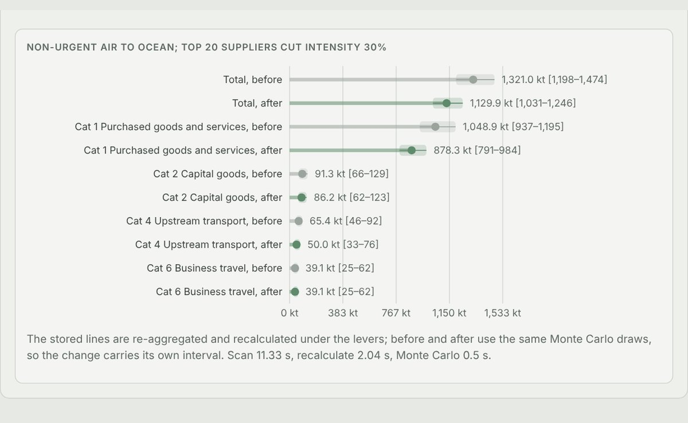
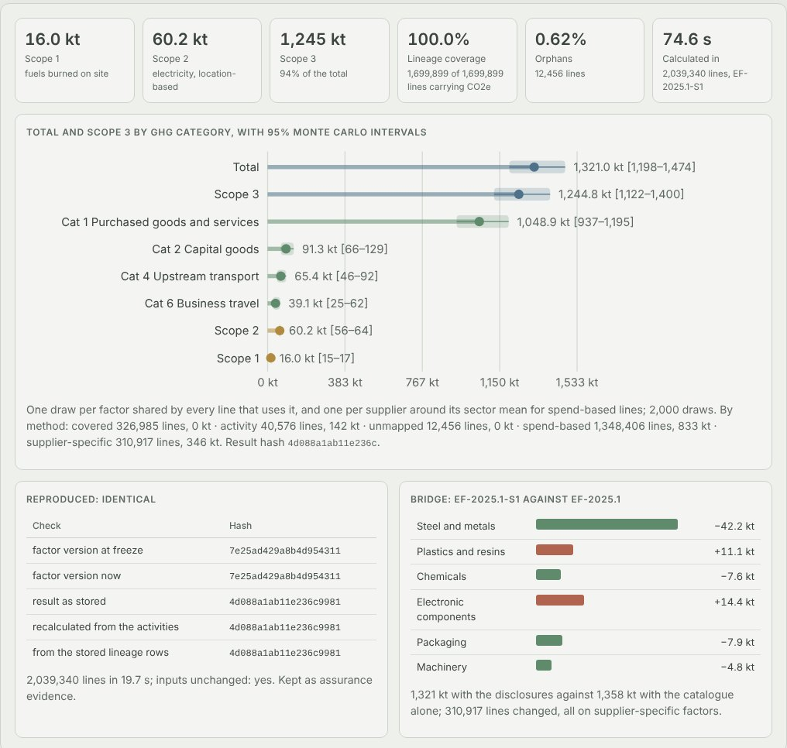
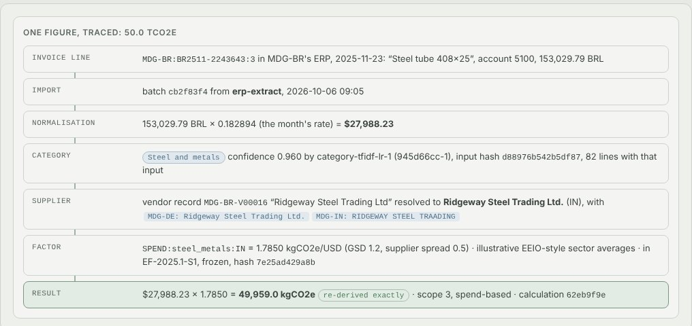
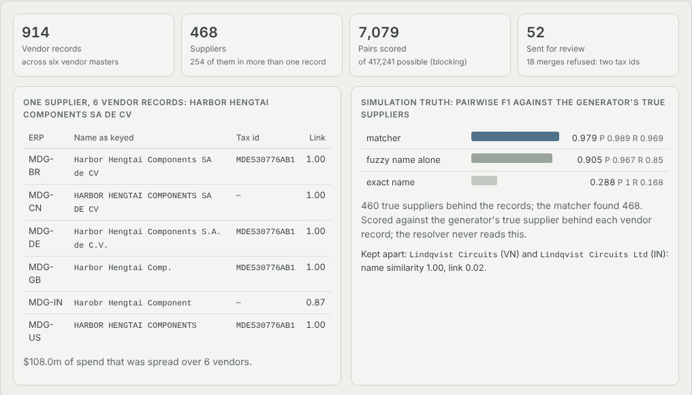

Python · Entity resolution · Carbon accounting · 2026-10
Can Two Million Invoices Become a Carbon Number You Can Audit?
Scope 1-3 carbon accounting for an invented multinational: two million invoice lines imported in 108 s, 914 vendor records resolved into 468 suppliers, every one of 1,699,899 CO2e figures traced to its invoice and frozen factor and reproduced bit for bit, and moving non-urgent air freight to ocean plus 20 suppliers decarbonising cutting 191.1 kt (95% interval 161-233).

Built from a written blueprint as one vertical slice. The company is simulated: its six ERPs' vendor masters and invoice lines, the shipments, the utility bills and the suppliers' disclosures come from a generator in the repository, and so does the emission-factor catalogue, whose values are illustrative rather than an official dataset. The generator knows the true supplier behind every vendor record, the true category of every line and every supplier's true intensity, which is what lets every figure be checked; the service never reads it. Not built: Kafka, a data warehouse, Neo4j, pgvector, a learned embedding model or an LLM, market-based Scope 2, Scope 3 categories beyond 1, 2, 4 and 6, single sign-on.
01 — The problem
A manufacturer's Scope 3 inventory is mostly arithmetic on its purchase ledger, and that is exactly why it is hard to trust. The same supplier sits in six ERPs under six spellings, an invoice line says "PO 4402630 Misc", currencies and units differ by subsidiary, the factor catalogue changes every year, and the final number goes to an annual report and an assurer who will ask where one figure came from. Can software turn two million invoice lines into an inventory where every CO2e figure traces back to its invoice and factor, comes out identical when recalculated, carries an honest uncertainty, tells procurement which suppliers matter, and changes its factors or gets published only when a second person agrees?
Blueprint 3 of twenty in a fourth build book, built as its demo scenario end to end.
02 — What I built
A Python service on PostgreSQL with a background worker and a web page, started by one docker compose up.
- A simulated multinational: six subsidiaries, 460 suppliers keyed into vendor masters with clerks' variations and near-namesakes that are different companies, two million invoice lines, 40,000 shipments, a year of utility bills and the larger suppliers' disclosures.
- A normaliser for currencies, units, double postings and bad lines, and a category classifier that abstains to rules and a review task.
- Supplier resolution by blocking, a learned matcher and a tax-id veto, and a disclosure reader that turns supplier reports into supplier-specific factors.
- Frozen factor versions, a lineage row for every figure, Monte Carlo bands, hash-checked reproduction, and publication behind policy checks and a second person.
- Supplier engagement ranking on the network the disclosures reveal, and scenarios recalculated from every stored line.
03 — How it was built
- 01
A company whose truth is known
Each supplier has a true category, a tax id, a company domain and a true carbon intensity: the catalogue's sector average, times a per-company error on that average, times the supplier's own offset. Each subsidiary's clerk keys it differently, one ERP truncates names at 24 characters, and one in ten suppliers has a near-namesake that is a different company. The generator injects double postings, odd currency spellings, unknown vendors and wrong years and counts them: the import dropped 8,046 double postings, exactly the number injected.
keep, usd, rate, rejected, dups = engine.normalize_ap(L, names, year) # rejected: (line, "unknown_currency" | "unknown_vendor" | "outside_reporting_year", reason) - 02
One supplier, six spellings, and a namesake kept apart
Candidate pairs come from character n-gram neighbours and shared tax ids or domains (7,079 of 417,241 pairs); a logistic matcher weighs name similarity, tax id, domain and country; merges never join two tax ids. On three held-out companies it scored pairwise F1 0.976-0.980 against 0.887-0.923 for fuzzy names alone and 0.245-0.340 for exact names. The fuzzy rule's failure is the instructive one: Lindqvist Circuits in Vietnam and Lindqvist Circuits Ltd in India have identical names after clean-up and are different companies.
if self.tax[a] and self.tax[b] and not (self.tax[a] & self.tax[b]): return False # never join two legal entities with different tax ids - 03
Mapping lines it is unsure of to a person, not a guess
Description (digits masked), account and vendor name go through character n-gram TF-IDF into logistic regression trained on 6,000 lines the team labelled last year; each distinct input is classified once and logged with its model version and hash. Below 0.55 confidence it hands the line to keyword and account rules and a review task. Held out, it put 98.0-98.8% of spend in the right category against 91.1-91.4% for the rules, and left 0.49-0.63% of lines as orphans against 1.92-1.94% (the blueprint's bar is 1%).
def mask(desc): return _DIGITS.sub("#", (desc or "").lower()).strip() - 04
Factors that cannot change behind your back
A factor version is a draft until a second person approves it; then database triggers refuse any insert, edit, delete or unfreezing. The demo's 29 accepted supplier disclosures became EF-2025.1-S1 that way: the analyst's own approval was refused and the lead's froze it. The extractor read all 132 figures in the demo's disclosures within 1%, and the planted unit slip, revenue in thousands labelled millions, was read as written and refused as implausible.
CREATE TRIGGER factor_frozen BEFORE INSERT OR UPDATE OR DELETE ON emission_factor FOR EACH ROW EXECUTE FUNCTION factor_frozen_guard(); - 05
A lineage row for every figure, and a hash over all of them
The engine runs on the 4,246 distinct combinations of kind, category, country, supplier, mode and fuel, then multiplies out over every line; freight and energy invoices are left to the shipments and bills so nothing is counted twice. Every line keeps a lineage row, and a SQL check confirms each figure re-derives from its invoice, mapping and factor: 1,699,899 of 1,699,899. Recalculating from the stored activities and hashing the stored rows gave the same SHA-256.
kg = L["q"] * cval[L["k"]] out["identical"] = out["version_hash_at_freeze"] == out["version_hash_now"] and again == calc["result_hash"] == stored_lines - 06
Who to engage, and what the levers are worth
A supplier's priority is its estimated emissions plus what flows through it on the network the disclosures reveal (who sells materials to whom). Scenarios recalculate from every stored line with the same Monte Carlo draws before and after, so the reduction carries its own interval: moving non-urgent intercontinental air to ocean saved 15.4 kt and added 28.6 days in transit; the top 20 suppliers cutting intensity 30% saved 170.7 kt in purchased goods.
cut_upstream[t] = sum(x for s, x in zip(ups, w) if s in chosen) * r
04 — Results
The demo. Two million invoice lines in, Scope 1 16.0 kt, Scope 2 60.2 kt, Scope 3 1,244.8 kt (95% interval 1,122-1,400), with 100% lineage and a reproduction that matched hash for hash:

One figure traced back to its invoice:

Supplier resolution in the demo:

On three held-out companies:
| System | Baseline | |
|---|---|---|
| Supplier resolution, pairwise F1 | 0.976-0.980 | 0.887-0.923 fuzzy names |
| Spend mapped to the right category | 98.0-98.8% | 91.1-91.4% rules |
| Orphan lines after mapping | 0.49-0.63% | 1.92-1.94% |
| Disclosure figures read within 1% | 409 of 409 | 167 of 409 naive |
| Inventory buckets inside the 95% interval | 50 of 54 | 47 of 54 catalogue alone |
| True supplier emissions in reach of the top 20 | 44.0-49.9% | 28.9-33.3% by spend |
In the demo company the top 20 by emissions plus network reached 50.5% of true supplier emissions against 38.7% ranked by spend. Recalculating a scenario over 10.2 million lines took 39.6-41.5 s (the blueprint's bar is 60 s).
Honest limits. The biggest error is the factor catalogue's: with it alone the 95% intervals held the truth in 47 of 54 buckets, too few, and supplier-specific factors only cover the 17% of spend whose suppliers disclosed in full. The network centrality was no better than ranking by estimated emissions alone (+0.5, -0.5 and 0.0 points); the gain is ranking by emissions instead of spend. The classifier's accuracy comes from templated descriptions where vendor names carry much of the signal, so real ledgers will score lower. The Monte Carlo leaves out the chance a line was mapped to the wrong category. Storing a lineage row per line costs 43.5 of the calculation's 74.6 s.
Checks. 15 tests, including: the normaliser refuses each bad line with its reason, the matcher beats both baselines and never joins two tax ids, the classifier abstains instead of guessing, energy and freight invoices carry no emissions of their own, a frozen factor cannot be edited in the database, the same version gives the same hash and another version a different one, the Monte Carlo is centred and its paired change is tighter than either total, publication without a matching reproduction is refused, a proposer cannot approve, and one company cannot see another's data. The Docker stack was run end to end.
05 — What I'd do next
- Real AP ledgers and supplier names, where a learned embedding or a language model would have to earn its place against character n-grams and tax ids.
- Classification uncertainty in the Monte Carlo, and a drift monitor on the classifier's inputs as suppliers and descriptions change.
- The lineage rows in a columnar store, so scenario recalculation stays under a minute well past 15 million lines.